the start of GardenGate
The very start of the project was based off of Kyber and I was working with someone who had a similar project called Project Outlawn that went by Twig who went on to maintain the entire repo.
I was a dum dum little poopy brained shit after removing the drm from the exe thinking i was smart pasting Kyber using existing offsets from Outlawn, which is why it only got as far as the loading screen
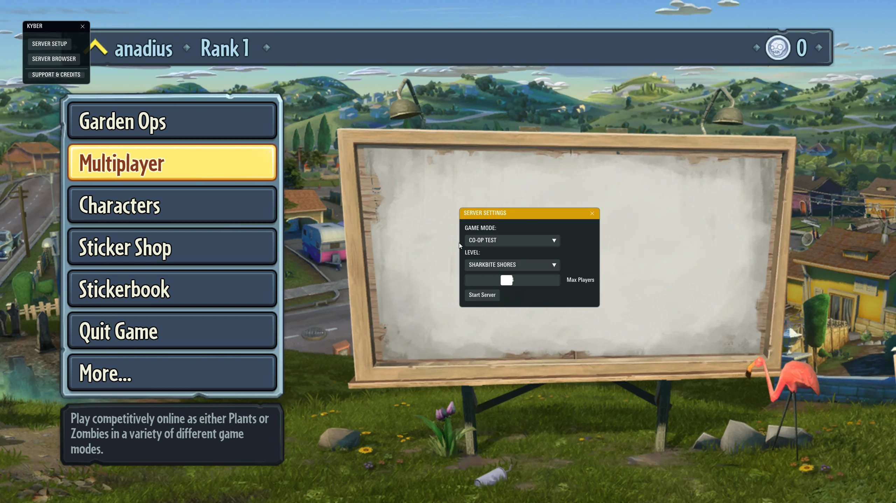
The whole reason GardenGate started was because the dev that was making GW1 and 2 private server software was gatekeeping the hell out of it, and delayed it for like 3 years, always giving excuses and always getting the ppl in his server to defend him.
Though, after about a week of development on my side of trying to get shit to work with Kyber, like a baby putting a square in the triangle hole cuz I was just pasting and praying, an actual RE with experience that went by RaT took over the project, rebased the entire thing from Kyber and led to actual functioning results!
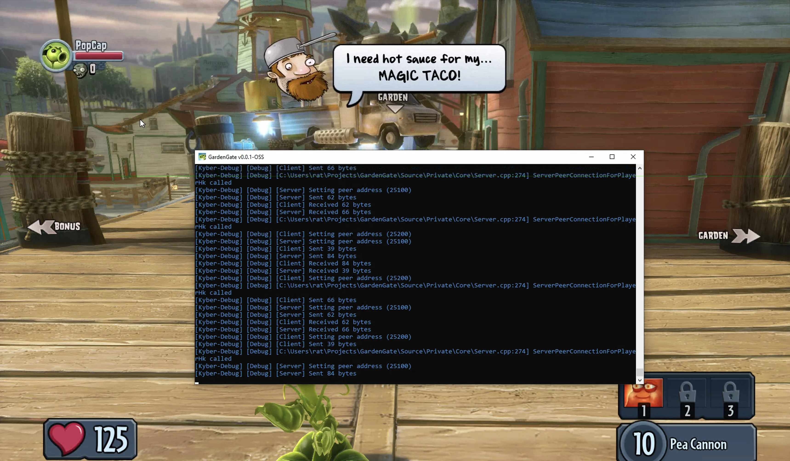
RaT showing off that he's in game.
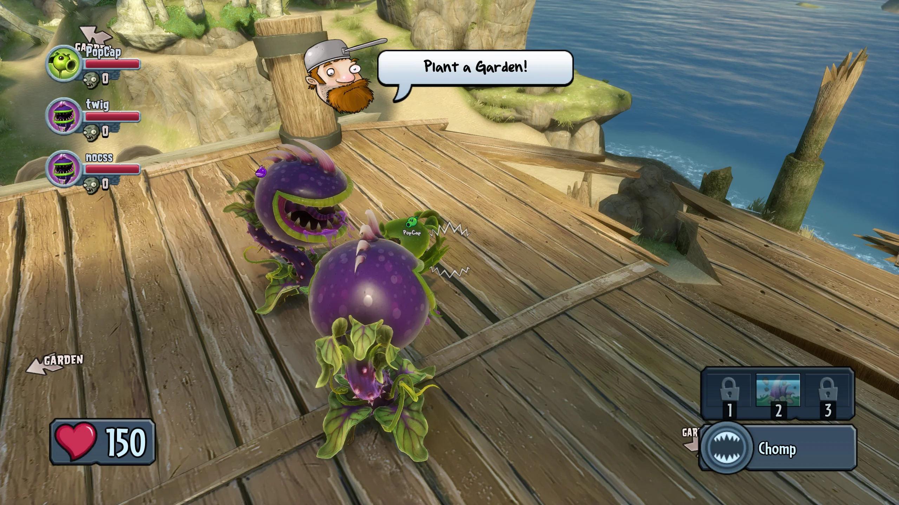
was really cool at the time, though upgrades and variants are non functional.
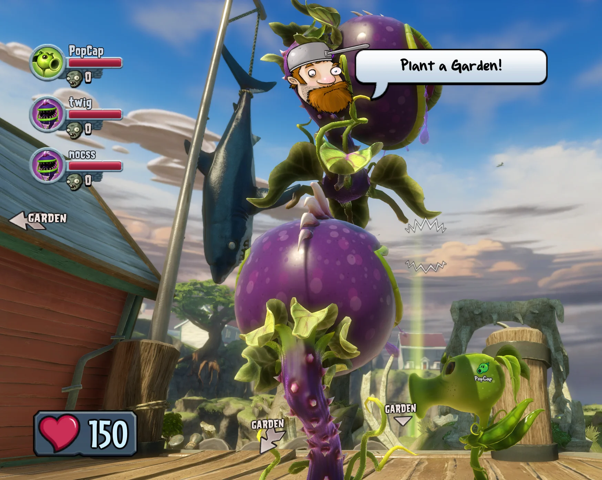
dumb shit we did on the first test
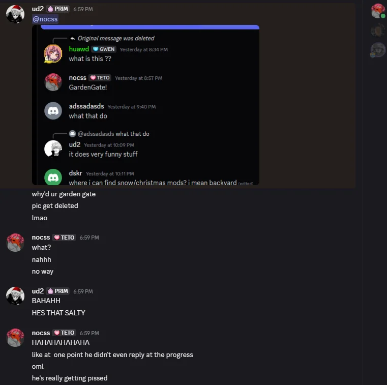
stuff started getting deleted in the Frostbite Server

we were bored in the server whilst RaT was away.

beautiful drawing of homie simpon.

its exactly what it looks like.

FIND YOUR DREAMS COME TRUEE.
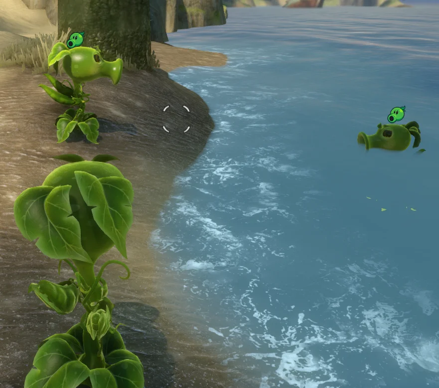
chili bombs move people >:)
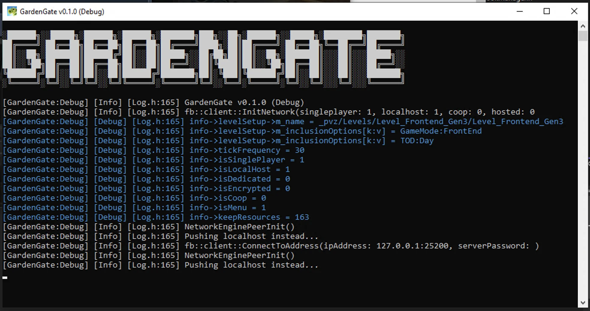
moving on from Kyber!
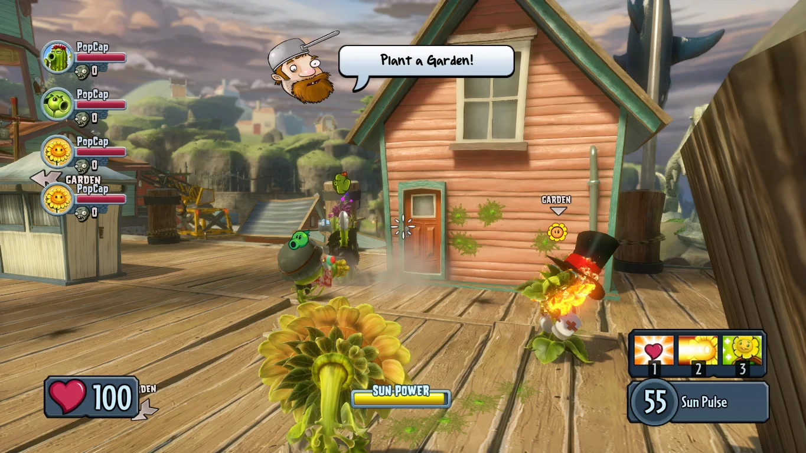
we got accessories and shit!

mhm yeah not my best work.
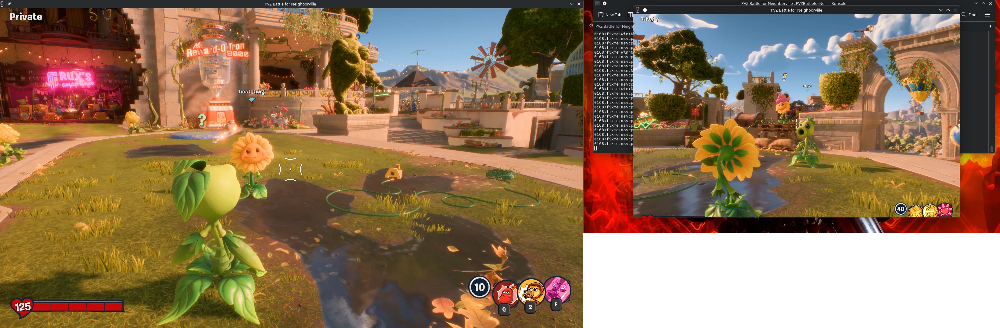
twig showing off the BFN compatibility.
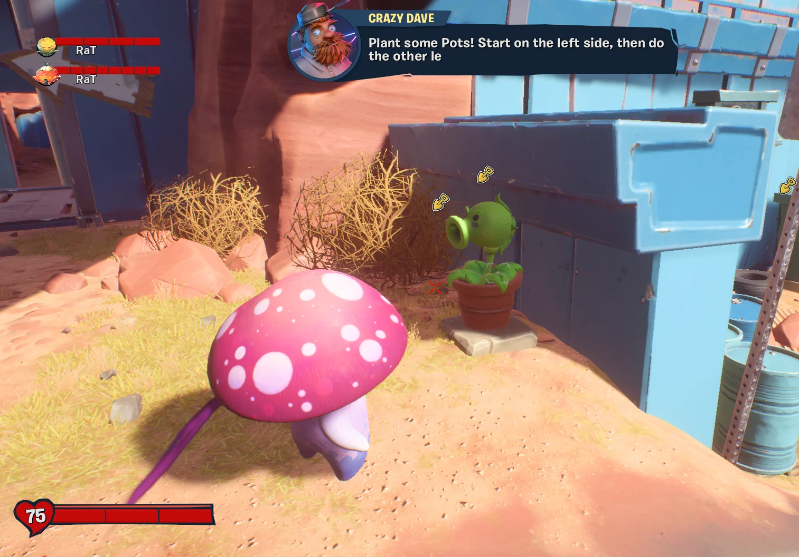
early BFN footage.
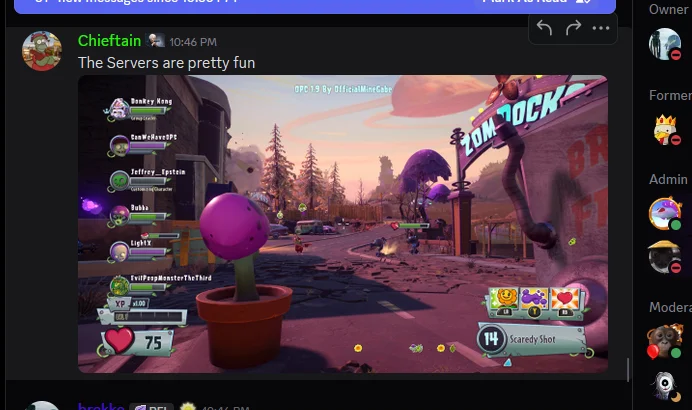
really nice to see despite all the drama.
As cool as it was at the time, after a while brekko released his version with the Cypress launcher which deprecates ours. it has anti-cheat and requires EA login which I don't really like but so long as people are playing garden warfare and keeping it alive, i'm happy
Thanks to Twig, GardenGate is compatible with linux! And he's actively maintaining things :).